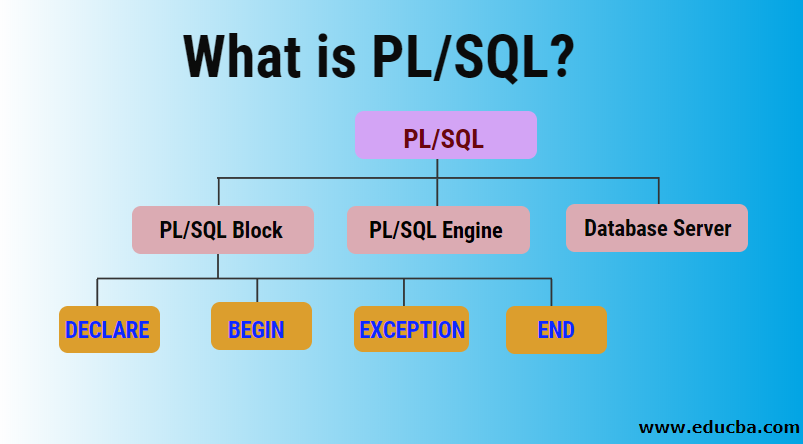
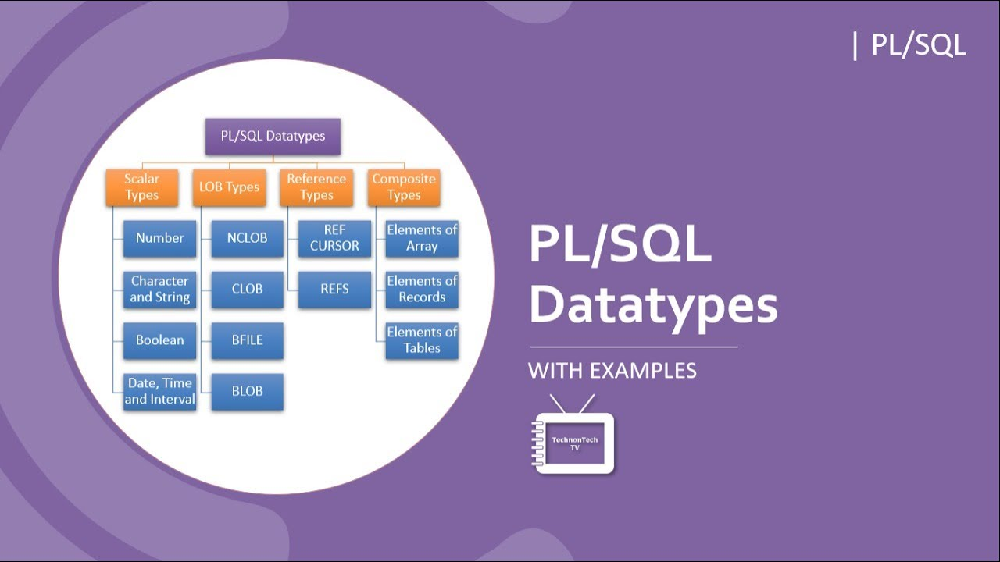
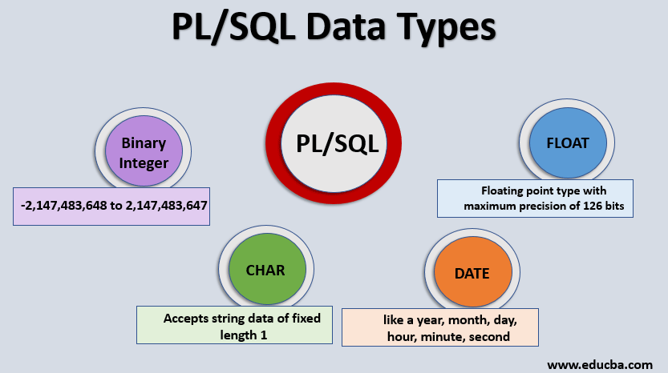

<div class="slideshow-container">

<div class="mySlides fade">
  <div class="numbertext">1 / 3</div>
  
  <div class="text">one</div>
</div>

<div class="mySlides fade">
  <div class="numbertext">2 /  3</div>
  
  <div class="text"> Two</div>
</div>

<div class="mySlides fade">
  <div class="numbertext">3 / 3</div>
  
  <div class="text"> Three</div>
</div>


</div>
<br>

<div style="text-align:center">
  <span class="dot"></span> 
  <span class="dot"></span> 
  <span class="dot"></span>
   
</div>

<script>
let slideIndex = 0;
showSlides();

function showSlides() {
  let i;
  let slides = document.getElementsByClassName("mySlides");
  let dots = document.getElementsByClassName("dot");
  for (i = 0; i < slides.length; i++) {
    slides[i].style.display = "none";  
  }
  slideIndex++;
  if (slideIndex > slides.length) {slideIndex = 1}    
  for (i = 0; i < dots.length; i++) {
    dots[i].className = dots[i].className.replace(" active", "");
  }
  slides[slideIndex-1].style.display = "block";  
  dots[slideIndex-1].className += " active";
  setTimeout(showSlides, 2000); // Change image every 2 seconds
}
</script>

</body>
</html> 

&gt;
    <p>


<!DOCTYPE html>
<!-- saved from url=(0036)https://learndbms.netlify.app/pl.sql -->
<html lang="en"><head><meta http-equiv="Content-Type" content="text/html; charset=UTF-8">
    
    <meta name="viewport" content="width=device-width, initial-scale=1.0">
    <title>Document</title>
</head>
<body>
    
    <h1>PL/SQL Introduction</h1>
PL/SQL is a block structured language that enables developers to combine the power of SQL <br>with procedural statements.All the statements of a block are passed to oracle engine  <br>all at once which increases processing speed and decreases the traffic. <br>
<h1>Basics of PL/SQL</h1>
•PL/SQL stands for Procedural Language extensions to the Structured Query Language (SQL). <br>
 PL/SQL is a combination of SQL along with the procedural features of programming languages. <br>
Oracle uses a PL/SQL engine to processes the PL/SQL statements. <br>
PL/SQL includes procedural language elements like conditions and loops. It allows  <br>declaration of constants and variables, procedures and functions, types and variable of those types and triggers. <br>
<h1>Disadvantages of SQL:</h1>

SQL doesn’t provide the programmers with a technique of condition checking, looping and branching. <br>
SQL statements are passed to Oracle engine one at a time which increases traffic and decreases speed. <br>
SQL has no facility of error checking during manipulation of data. <br>
<h1>Features of PL/SQL:</h1>

PL/SQL is basically a procedural language, which provides the functionality of decision <br>making, iteration and many more features of procedural programming languages.<br>
PL/SQL can execute a number of queries in one block using single command.<br>
One can create a PL/SQL unit such as procedures, functions, packages, triggers, and types, <br>which are stored in the database for reuse by applications.<br>
PL/SQL provides a feature to handle the exception which occurs in PL/SQL block known as <br>exception handling block.<br>
Applications written in PL/SQL are portable to computer hardware or operating system where <br>Oracle is operational.<br>
PL/SQL Offers extensive error checking.<br>
<h1>Structure of PL/SQL Block:</h1>

PL/SQL extends SQL by adding constructs found in procedural languages, resulting in a <br>structural language that is more powerful than SQL. The basic unit in PL/SQL is a block.<br> All PL/SQL programs are made up of blocks, which can be nested within each other.<br>
<h1>DECLARE</h1>
    declaration statements;<br>

<h1>BEGIN</h1>
    executable statements<br>

<h1>EXCEPTIONS</h1>
    exception handling statements<br>

<h1>END;</h1>
<br>
Declare section starts with DECLARE keyword in which variables, constants, records as <br>cursors can be declared which stores data temporarily.<br> It basically consists definition of PL/SQL identifiers. This part of the code is optional.<br>
Execution section starts with BEGIN and ends with END keyword.<br>This is a mandatory section and here the program logic is written to perform any task like loops and conditional statements. It supports all DML commands, DDL commands and SQL*PLUS built-in functions as well.<br>
Exception section starts with EXCEPTION keyword.This section is optional which contains statements that are executed when a run-time error occurs. Any exceptions can be handled <br>in this section.<br>
<h1>PL/SQL identifiers</h1>
There are several PL/SQL identifiers such as variables, constants, procedures, cursors, triggers etc.<br>

Variables: Like several other programming languages, variables in PL/SQL must be declared prior to its use. They should have a valid name and data type as well. Syntax for <h1>declaration of variables:</h1>
variable_name datatype [NOT NULL := value ];

PL/SQL Cursor
When an SQL statement is processed, Oracle creates a memory area known as context area. A cursor is a pointer to this context area. It contains all information needed for processing the statement. In PL/SQL, the context area is controlled by Cursor. A cursor contains information on a select statement and the rows of data accessed by it.

A cursor is used to referred to a program to fetch and process the rows returned by the SQL statement, one at a time. There are two types of cursors:

Implicit Cursors
Explicit Cursors
<h1>. PL/SQL Implicit Cursors</h1>1
The implicit cursors are automatically generated by Oracle while an SQL statement is executed, if you don't use an explicit cursor for the statement.<br>

These are created by default to process the statements when DML statements like INSERT, UPDATE, DELETE etc. are executed.<br>


Orcale provides some attributes known as Implicit cursor's attributes to check the status of DML operations. Some of them are: %FOUND, %NOTFOUND, %ROWCOUNT and %ISOPEN.<br>

For example: When you execute the SQL statements like INSERT, UPDATE, DELETE then the cursor attributes tell whether any rows are affected and how many have been affected.<br> If you run a SELECT INTO statement in PL/SQL block, the implicit cursor attribute can be used to find out whether any row has been returned by the SELECT statement.<br> It will return an error if there no data is selected.<br>
DECLARE   <br>
   total_rows number(2);  <br>
BEGIN  <br>
   UPDATE  customers  <br>
   SET salary = salary + 5000;  <br>
   IF sql%notfound THEN  <br>
      dbms_output.put_line('no customers updated');  <br>
   ELSIF sql%found THEN  <br>
      total_rows := sql%rowcount;  <br>
      dbms_output.put_line( total_rows || ' customers updated '); <br> 
   END IF;   <br>
END;  <br>
/  
Output:<br>

6 customers updated<br>
PL/SQL procedure successfully completed.<br>

<h1> Exeception Handling in Sql</h1>
DECLARE<br>
declarations section;<br>
BEGIN<br>
executable command(s);<br>

EXCEPTION<br>
WHEN exception1 THEN<br>
statement1;<br>
WHEN exception2 THEN<br>
statement2;<br>
[WHEN others THEN]<br>
/* default exception handling code */<br>

END;<br>
DECLARE<br>
temp varchar(20); <br>

BEGIN<br>
SELECT g_id into temp from geeks where g_name='GeeksforGeeks'; <br>

exception <br>
WHEN no_data_found THEN<br>
	dbms_output.put_line('ERROR'); <br>
	dbms_output.put_line('there is no name as'); <br>
	dbms_output.put_line('GeeksforGeeks in geeks table'); <br>
end; <br>

Exception name descriptions<br>
CASE_NOT_FOUND	None of the cases in a CASE statement evaluates to "true", and there is no ELSE condition.<br>
CURSOR_ALREADY_OPEN	An attempt was made to open a cursor that is already open.<br>
DUP_VAL_ON_INDEX	There are duplicate values for the index key.<br>
INVALID_CURSOR	An attempt was made to access an unopened cursor.<br>
INVALID_NUMBER	The numeric value is invalid.<br>
LOGIN_DENIED	The user name or password is invalid.<br>
NO_DATA_FOUND	No rows satisfied the selection criteria.<br>
NOT_LOGGED_ON	A database connection does not exist.<br>
OTHERS	For any exception that has not been caught by a prior condition in the exception section.<br>
SUBSCRIPT_BEYOND_COUNT	An array index is out of range or does not exist.<br>
SUBSCRIPT_OUTSIDE_LIMIT	The data type of an array index expression is not assignable to the array index type.<br>
TOO_MANY_ROWS	More than one row satisfied the selection criteria, but only one row is allowed to be returned.<br>
VALUE_ERROR	The value is invalid.<br>
ZERO_DIVIDE	Division by zero was attempted.<br>


</body></html>